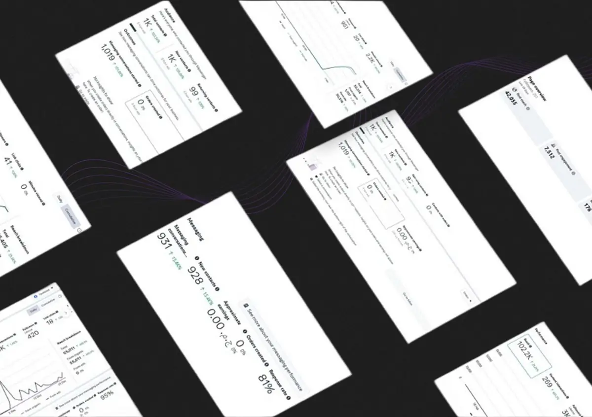

Meta Ads
Facebook & Instagram campaign execution across messaging, lead generation, link-click and awareness objectives.
Messages · Click to WhatsApp · Lead GenI help B2B and B2C brands connect paid media, content and a clearer path to growth. From the first idea to the next optimization, every decision needs a reason.
My work spans MENA, Europe and the US, bringing creative thinking and campaign analysis into the same conversation.
THE EXPERIENCE BEHIND IT ↗Spend is grouped by currency and includes account-history totals alongside selected campaign snapshots. It is documented scope, not a claim that every historical campaign was managed by me. Estimated spend and duplicate campaign breakdowns are excluded. Conversations sum selected results across seven clients; they are not unique people. These figures cover available evidence, not lifetime totals.
Conversion activity · EGP 167.6K+ spend.
Explore the website-first growth story.
Selected two-campaign snapshot.
AED 8.55 average cost per conversation.
21 campaigns · EGP 136.34 weighted CPL.
29 Jan–29 Oct 2026. Lead quality unverified.
Documented campaign work spans Meta Ads and TikTok Ads, with WhatsApp used as a direct lead-generation destination across multiple messaging campaigns.
Facebook & Instagram campaign execution across messaging, lead generation, link-click and awareness objectives.
Messages · Click to WhatsApp · Lead GenSearch campaign management with separate buyer and seller intent structures and performance tracking.
Search · CPC · Clicks · ImpressionsAwareness and follower-growth campaigns across Egypt and UAE with market-level creative optimization.
Awareness · Follower Growth · LocalizationConversation-led funnels designed to move ad traffic directly into qualified messaging opportunities.
Lead Conversations · Direct ResponseSelected case studies from a wider body of paid media work across markets, platforms and objectives.
Meta Ads · Lead Forms · EGP · 29 Jan–29 Oct 2026
Generate property inquiries through lead forms for Bait Al Watan, North Rehab and ZAHYA campaigns.
The export also includes hiring messages, visits, awareness and custom conversions, measured separately from form leads.
Include only Leads (form) rows. Weighted CPL equals their total spend divided by their total form leads.
Meta Ads · GCC · WhatsApp · Arabic + Russian-Speaking Audiences
Generate qualified WhatsApp conversations for a premium automotive wheel business.
Audience segments produced very different response costs, especially across language groups.
Separate audiences, test saved/cold/language segments and optimize each based on conversation volume and cost.
Meta Ads · UAE · WhatsApp Messaging
Generate WhatsApp inquiries for home-labor services across multiple campaign waves.
Maintain conversation efficiency as campaign volume and audience coverage increased.
Use direct-response messaging structures, separate audience groups and continuously optimize cost per conversation.
Jewelry / Accessories · UAE · Jordan · Egypt · Meta Ads
Drive sales conversations and traffic across three markets without treating different currencies and markets as one blended result.
UAE ran in AED while Egypt + Jordan shared a USD account, with Jordan carrying most of the budget.
Keep market performance separated inside one brand case and use account scale only as context where the account includes broader history.
≈ $13.47KJordan
≈ $1.50KEgypt
AED 10.23KSpend
AED 9.47Avg. CPR
299.8KViews
Meta Ads · Egypt · Website Conversion · Long-Term Partnership
Build a more scalable path from paid traffic to completed purchase.
Sales depended heavily on manual DMs, limiting the ability to scale conversion activity cleanly.
Shift toward a website-first conversion journey and optimize the wider funnel, not Ads Manager in isolation.
Meta Ads · UAE · Procedure-Led Messaging Across Multiple Locations
Generate messaging inquiries for different procedures while supporting appointments across multiple UAE locations.
Different procedures and locations created very different response costs and demand levels.
Structure messaging around procedure/location combinations and evaluate each campaign against conversation efficiency.
Dr. Mohamed El Sherbiny · Meta Ads · Egypt · Messages, Profile Visits & Engagement
Generate patient inquiries while also building profile visibility and audience interaction.
Messaging, profile visits and engagement each needed a different performance benchmark.
Separate campaign objectives and optimize each against its own cost per result instead of one blended KPI.
Meta Ads · Egypt · Profile Growth & Messaging
Grow profile visibility while continuing to generate direct patient conversations.
Discovery and inquiry generation are different jobs and should not share one benchmark.
Run profile-visit and messaging campaigns separately so each could be optimized against its intended action.
TikTok + Instagram · Egypt + UAE · Followers, Profile Visits & Awareness
Grow the audience efficiently across Instagram and TikTok instead of relying on one platform or one market.
Follower acquisition, profile traffic and TikTok delivery had different cost structures by market.
Track each growth objective separately, then compare Egypt and UAE delivery to identify where cost increased.
Meta Ads · Syria · Multi-Course Messaging
Generate direct inquiries for multiple course offers through messaging campaigns.
Course offers needed enough volume without allowing conversation cost to drift upward.
Keep offers in separate campaigns and compare them directly on conversation volume and cost efficiency.
Meta Ads · UAE · Automotive · B2C / B2B / Luxury Services
Support multiple automotive offers and audience types across a broader paid-media account.
The account includes different services, audience intents and campaign histories rather than one single objective.
Paid media management across multiple campaigns and objectives within the account, without claiming the full historical account as my own work.
Meta Ads · Germany + Netherlands · Multi-Objective Paid Media
Run paid media across Germany and the Netherlands using multiple traffic and engagement objectives.
The account contains a long campaign history and multiple objective types, so account totals need to be separated from personal campaign claims.
Paid media management across multiple campaigns within the account for the Germany and Netherlands markets.
Market, audience, objective and channel decisions before execution.
Campaign structure, targeting, testing and optimization across ad platforms.
Content systems and messaging built around audience intent and business goals.
Angles, concepts and formats that give campaigns a stronger reason to stop the scroll.
Reading cost, reach, CTR, CPC and result patterns to decide what changes next.
Turning campaign data into clear takeaways rather than sending raw dashboards.
Paid Media Specialist | Full-time · Alexandria, Egypt
Media Buyer | Part-time · Remote · United Arab Emirates
Media Buyer | Full-time · Remote · United Arab Emirates
Media Buyer | Full-time · Alexandria, Egypt
Social Media Specialist | Full-time · Alexandria, Egypt
Media Buyer | Freelance · Alexandria, Egypt
Bachelor of Fine Arts (BFA) | Sculpture

The previous portfolio documented platform dashboards, campaign creatives and market-specific executions. This website reorganizes that material into clearer, decision-focused case studies.
Strategic content, paid media, campaign concepts and creative direction across different industries and markets.
Educational medical content built to make complex health topics clearer, more relevant and easier to engage with.
Medical topics can feel dense, sensitive or easy to scroll past.
Turn one patient concern into one clear, focused message.
Strong visual metaphors around reflux, obesity and symptom awareness, supported by a consistent doctor brand.
Content designed to make the student journey easier to understand through clear, engaging visual communication.
Study-abroad decisions can feel fragmented across deadlines, travel, admissions and university choices.
Break the journey into simpler questions, decisions and next steps.
Visual storytelling around deadlines, travel, decision-making and the overall student journey.
Corporate solutions, investment-focused content and podcast-style brand communication for business audiences.
Complex business offers can sound too technical or too generic when everything competes for attention.
Lead with one clear business benefit and adapt the communication style to each audience and market.
Corporate, investment and thought-leadership formats supported by multilingual, benefit-led communication.
Brand-led automotive content combining service visibility, cultural moments and reactive trend-based creative.
Automotive content can quickly become repetitive service posts and offers.
Balance clear brand communication with timely cultural moments and reactive content.
Occasion-led brand visuals alongside trend-led concepts — including the penguin creative built around a live social trend.
Trust-focused service communication built around care, reliability and the customer's everyday need.
Care and domestic-service brands need to build trust before the customer is ready to inquire.
Lead with reassurance, convenience and the real-life benefit behind the service.
Human-centered family visuals, direct Arabic messaging and service-led calls to action.
Premium property communication designed to make location, offer and investment value easier to scan and compare.
Property ads often contain too much decision-making information competing in one visual.
Prioritize the details buyers need first: project, location, unit type, price, payment plan and handover.
Premium hierarchy with the commercial offer integrated directly into the property visual.
If you need clearer strategy, stronger content, or campaigns with a reason behind them, tell me what you’re working on.